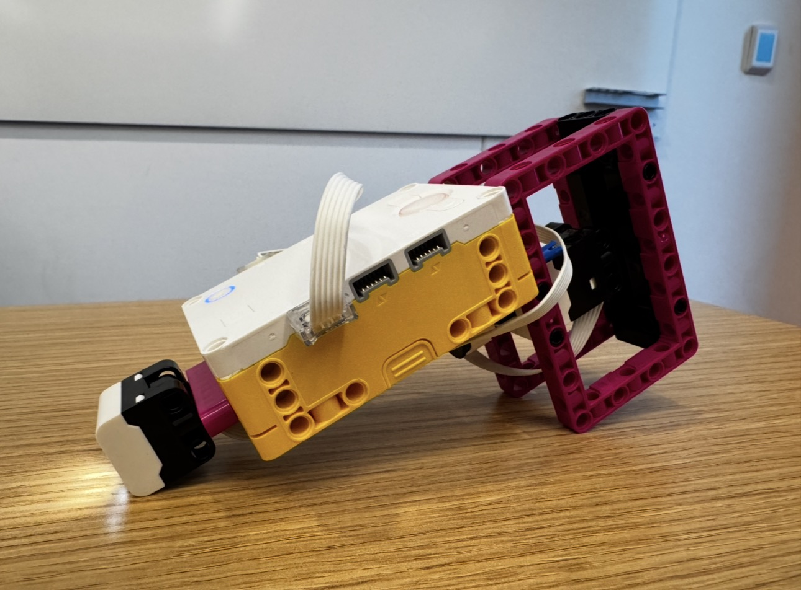

Using the same nearest-neighbor template from Project 11, J and I collected five color samples each from apples and bananas. The scanner then identified whether a fruit was an apple or a banana, using the hub's power button light to indicate its classification: red for apples and yellow-green for bananas.